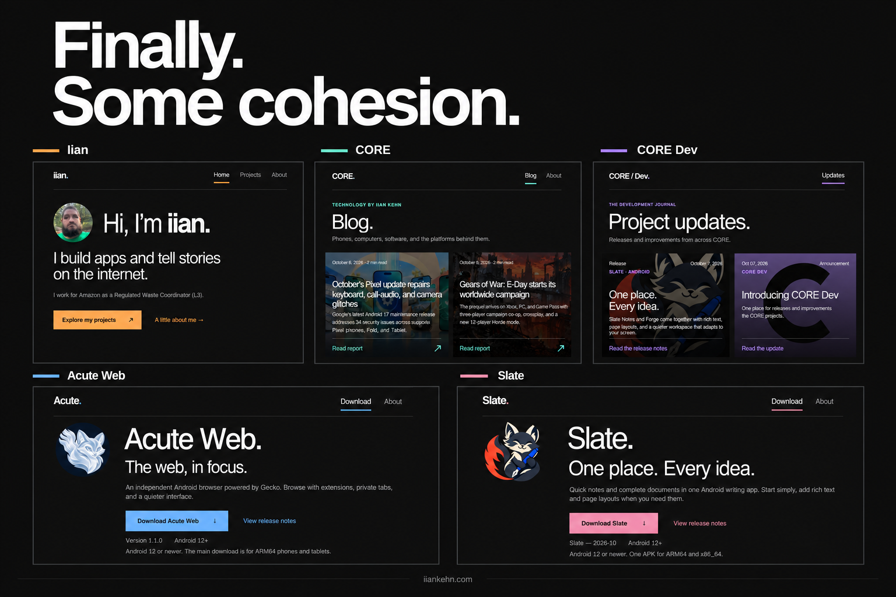

Finally. Some cohesion.

Five websites now share one design. My personal site, CORE, CORE Dev, Acute Web, and Slate have a common visual foundation, with an accent color that gives each its own identity.
One design, across the family
The redesign started with my personal site: a modern interpretation of Microsoft’s Metro design language, built around large typography, generous space, and clear navigation. That same approach now runs through every site.
The background stays the same near-black throughout. Orange marks my personal site, mint belongs to CORE, violet to CORE Dev, blue to Acute Web, and pink to Slate. Typography, spacing, headers, and footers follow the same system across phones, tablets, and desktops.
A clearer path to the apps
Acute Web and Slate now put downloading the product first. Each page has a prominent download button, current release information, Android requirements, and a short overview of what the app offers. Release notes sit alongside the download for anyone who wants the details.
More room for the writing
On CORE and CORE Dev, featured images fill the article tiles behind the text, with a dark overlay to keep titles and summaries readable. CORE Dev’s redundant project directory is gone, leaving the updates as the focus.
The result is a family of sites that feels connected, with a clearer purpose for each page.
- Iian — my personal site
- CORE — consumer technology
- CORE Dev — releases and improvements
- Acute Web — download the browser
- Slate — download the writing app
— Iian